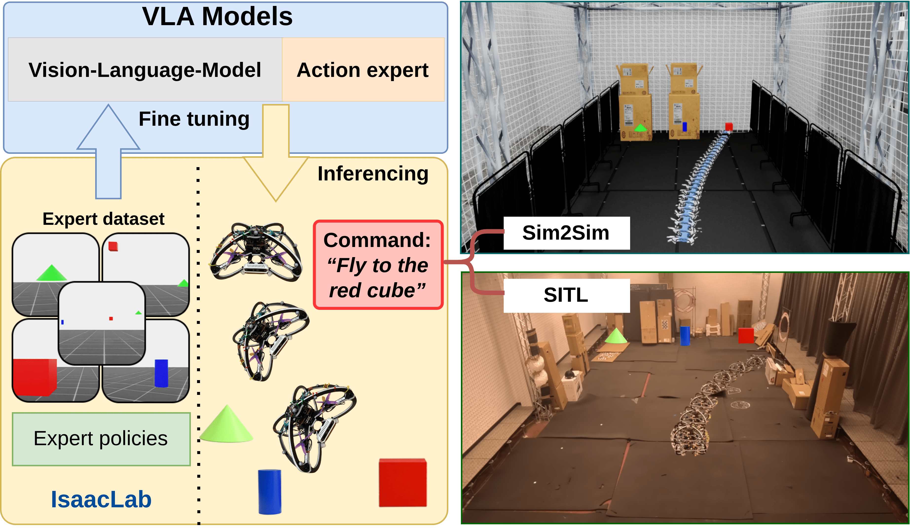

Vision-language-action (VLA) models open a new path toward intuitive robot control by directly linking perception, language, and action in a single end-to-end framework. Yet for unmanned aerial vehicles (UAVs), practical adoption remains challenging because existing VLA models are either computationally prohibitive for onboard flight or lack fine-grained agility in complex environments.
In this work, we propose Exp2VLA, a practical expert-distillation pipeline for language-conditioned drone navigation. The core idea is to distill expert behavior, obtained from reinforcement learning, teleoperation, or classical optimal controllers, into standardized demonstration data to fine-tune compact VLA models. This enables existing control capabilities to be transferred into a unified, language-guided aerial navigation policy, lowering the engineering barrier for deploying new robotic behaviors.
Evaluations across multi-object scenes in both sim-to-sim and simulation-in-the-loop (SITL) flight setups demonstrate that the fine-tuned VLA models reliably execute semantic navigation commands and generalize to unseen target compositions.
Distills RL and optimal control rollouts from Isaac Lab into standardized LeRobot demonstration datasets tailored for aerial navigation.
Directly conditions flight trajectories on natural language commands, enabling autonomous aerial robots to parse high-level instructions.
Publicly released SingleCube and MultiObject benchmark datasets on Hugging Face complete with interactive episode visualization spaces.
Exp2VLA automates expert trajectory harvesting, synchronization of front-camera RGB images with low-level quadrotor velocity setpoints, and formatting for compact VLA backbones (e.g., SmolVLA):
To facilitate reproducibility and research in language-guided aerial autonomy, we have released our full demonstration datasets on Hugging Face:
Demonstration trajectories for single-target goal reaching.
Complex trajectories across multi-object, multi-color semantic scenes.
If you find Exp2VLA or our released datasets helpful in your research, please consider citing:
@inproceedings{dang2026exp2vla,
title = {Exp2VLA: Enabling Vision--Language--Action for Drone Navigation from Expert Demonstrations},
author = {Dang, Van Huyen and Rajendran, Kabilesh and Sayar, Erdi and Kayacan, Erdal},
booktitle = {IEEE/ASME International Conference on Advanced Intelligent Mechatronics (AIM)},
year = {2026},
publisher = {IEEE}
}